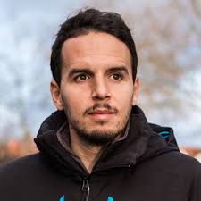
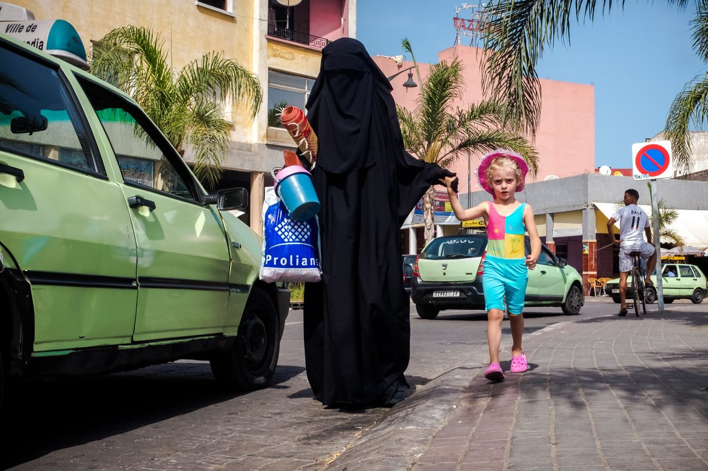
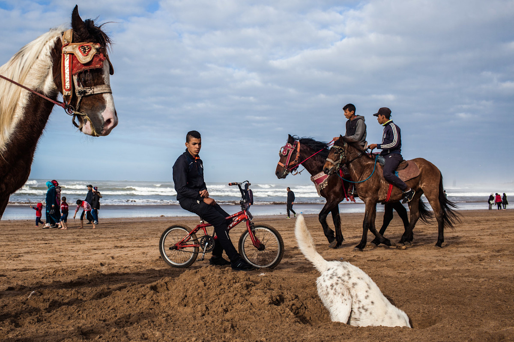
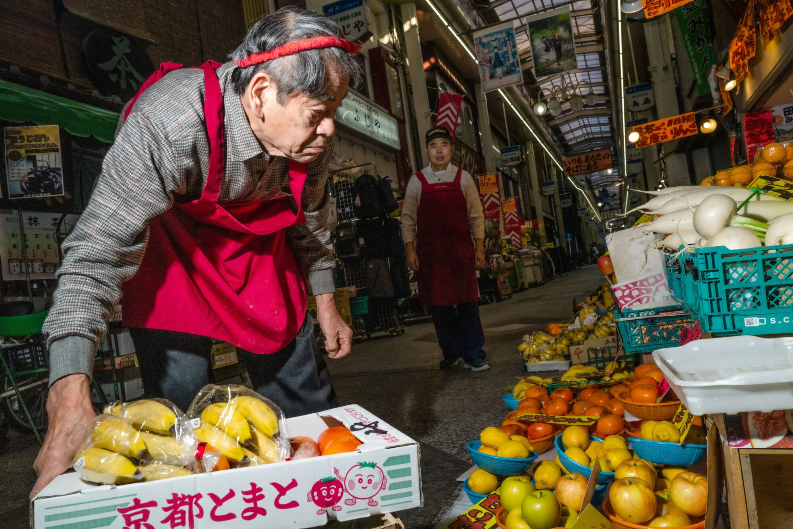
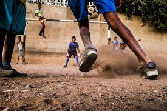
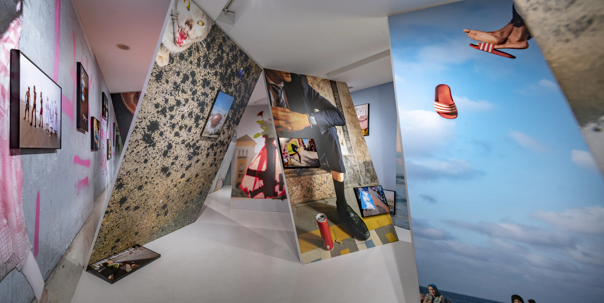
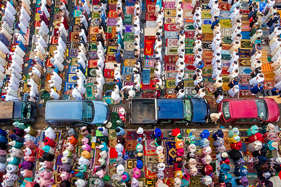
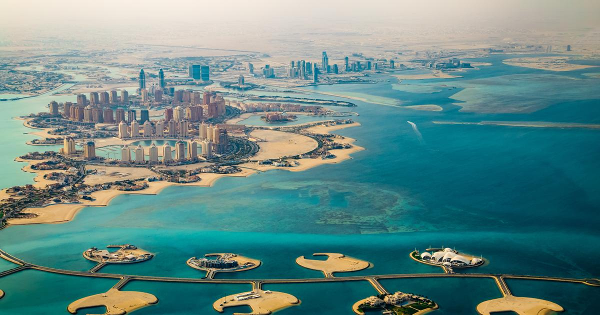

Yassine Alaoui Ismaili

Fotógrafo marroquí
Sobre él y premios
|
Yassine Alaoui Ismaili, conocido como Yoriyas, es fotógrafo y coreógrafo nacido en Casablanca. Su obra captura la vida urbana con espontaneidad, ritmo y color, influenciada por su trayectoria como bailarín de breakdance. |
Premios
| Premio | Descripción |
|---|---|
| World Street Photography | Esauira, 2016 |
| Contemporary African Photography Prize | Reconocimiento internacional |
| Sitio oficial — Yoriyas |
| Fotora — Biografía |
| Emergeast — Perfil artístico |
| Diario Calle de Agua — Premios |
Obras
Algunas fotos que hizo:

Casablanca no es una película — 2018 — Marruecos

África urbana — 2019 — Senegal

Kyotographie — 2021 — Japón
Proyectos
Casablanca... Not the Movie
2015–2019
Serie documental sobre la vida cotidiana en Casablanca, con enfoque en diversidad cultural.



Like a Dream
2020–2022
Serie poética sobre el movimiento y la danza en espacios públicos.


Otros fotógrafos
| Nombre | Año | Estilo |
|---|---|---|
| Yassine Alaoui Ismaili | 1984 | Callejero |
| Leila Alaoui | 1982 | Documental |
| Malick Sidibé | 1936 | Retrato |
| Hassan Hajjaj | 1961 | Pop Art |
| Institut du Monde Arabe | — | Exposición |
| Qatar Museums | — | Galería |
Exposiciones
| Evento | Descripción |
|---|---|
| Kyotographie | Festival internacional (2021) |
| Hermès Foundation | París (2020) |
| Tropenmuseum | Ámsterdam (2019) |
Links útiles:
| Instagram — @yoriyas |
| Barjeel Art Foundation |
Yoriyas Videos
Entrevista sobre su proyecto en Casablanca.
Presentación en Kyotographie.
Contacto
Estudio: Yoriyas Studio
| Casablanca | Boulevard Zerktouni | 10:00 – 18:00 |
| yoriyasphoto@gmail.com |